What are modules?
Modules provide functionality that can be used to enhance the images created by AllSky, modules can also provide functionality that does not affect the images but more on that later. The Module Manager allows you to control which modules are run and when they are run.
There are two types of modules
- System Modules - These are developed and maintained by the AllSky team. These modules are installed with the main AllSky installer
- User Modules - These are developed and maintained by people outside of the AllSky development team. These modules are installed via a separate installer, See LINK. These modules can be deleted if no longer required
User Modules User modules must only be installed from the official AllSky repositories. Installing modules from other source could be dangerous and is not encouraged.
Experimental Modules When installed some modules will display a warning that they are experimental. Before using any of these modules you should ensure that you are proficient in analysing Linux Logs files. They should be considered unstable and as such may 'break' your AllSky installation. In the Module Manager settings you can enable/disable experimental modules
Hardware Dependent Modules Some modules are designed to operate with external hardware, typically connected to the Pi's GPIO pins. Before attempting to use any of these modules you should ensure you have an understanding of interfacing hardware to the PI's GPIO
Please don't be discouraged by the above warnings. The module system provides a very flexible system allowing you to customise the AllSky software to your requirements without having to change any code
Module Flows
To enabled modules to make changes they are run within 'Flows'. For each of the Flows you can define which modules run and the order in which they are run.
The two areas the modules run in are;
- Via the capture process
- Day Flow - These are run after every day time image is captured
- Day to Night Transition Flow - These are run when Allsky switches from Daytime to Nighttime capturing
- Night Flow - These are run after every night time image is captured
- Night to Day Transition Flow - These are run when Allsky switches from Night to Daytime capturing
- Via a CRON system - These are run periodically, each modules defines the frequency with which it runs
The diagram below shows each stage of the capture process and how modules fit into it.
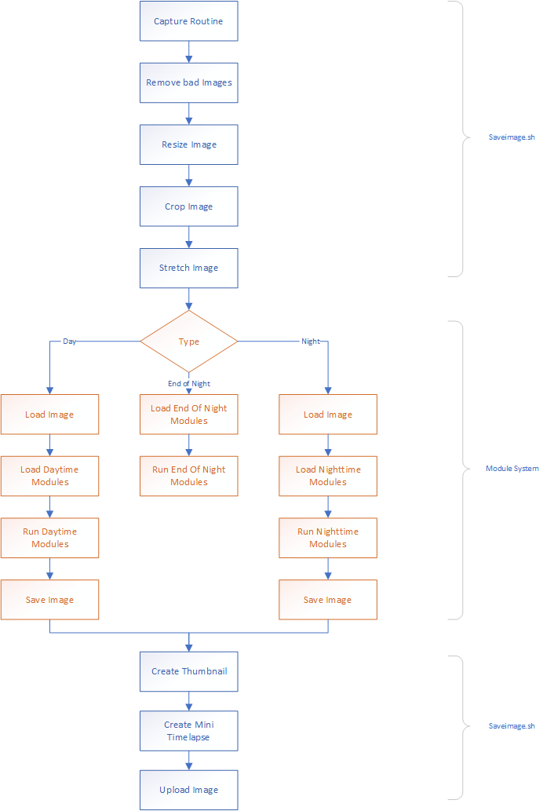The 'Module Manager'
The Module Manager is the main interface for managing all of the available modules and in which flows they are used.
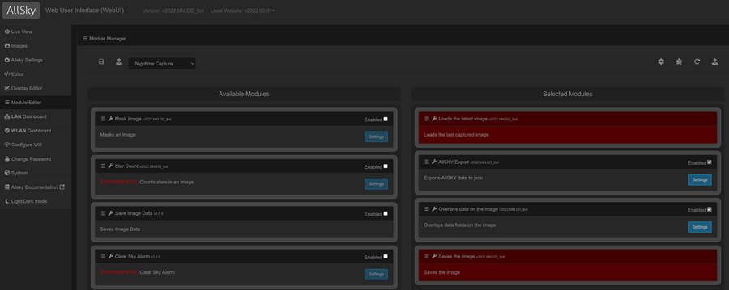
| Annotation | Description |
|---|---|
| 1 - Save | This will be enabled when any changes have been made |
| 2 - Upload | This will allow you to upload a zip file containing a new or updated module. Please see the section on adding and updating modules for more details on how to use this feature |
| 3 - Flow | The flow you wish to manage. If you have un saved changes from the current flow you will be prompted to save them before switching |
| 4 - Settings | Displays the settings dialog for the Module Manager |
| 5 - Debug | Displays the debug data for modules. This icon is only visible if its been enabled in the settings |
| 6 - Available | These are the available modules for the selected Flow |
| 7 - Enabled | These are the modules to be run in the selected Flow. They will only
be run if the enabled checkbox is selected
Modules displayed in red are fixed and cannot be moved |
Selecting a flow
From the drop down list select the flow that you wish to amend. If there are unsaved changes for the current flow then you will be prompted to save them before switching to a new flow. The current day/night flow will automatically be selected depending upon the current time of day
Enabling a module
To enable a module drag it from the Available column to the Enabled column. The module will become active after the flow has been saved.
Most modules will require some configuration. Modules can only be configured after they have been moved to the Enabled column, clicking the settings button will display any configuration options for the module
Don't forget to ensure the enabled checkbox is selected otherwise the module will not run. You can set modules to be automatically enabled when dragging them to the enabled column by setting the appropriate options in the module editor settings
Disabling a Module
There are two ways to disable a module
- Drag the module to the Available column - This will disable the module and lose any settings for it
- Uncheck the enable checkbox - This will disable the module but retain any settings. This is the preferred method if you just wish to temporarily disable a module
Setting the Module execution order
The modules will be run in the order they appear in the Enabled column. To change the order simply drag the modules up or down the list.
It is not possible to move any modules displayed in red
Module Manager Settings
| 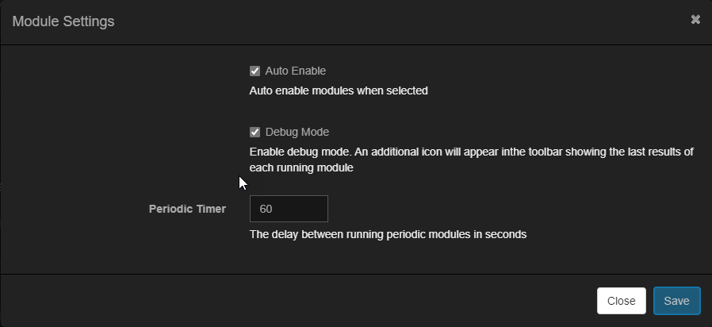 |
|
Modules
Modules form the heart of the module manager and there is a wide variety available. In this section each module is described in details along with all of the available settings.
Core Modules
The Core Modules are installed along with the main AllSky installer. The available modules are
Load Image
| Flows Available In | Description |
|---|---|
|
Loads the last image taken by AllSky. This is always the first module that is run during the daytime and nighttime capture to ensure that the image is available to all subsequent modules This module is enabled in the day and nighttime flows by default so there is no need to install it Since this module must always run first it is not possible to move or remove this module from the day and nighttime capture flows |
Save Image
| Flows Available In | Description |
|---|---|
|
Saves the final image after all of the modules have run. This is always the last module that is run during the daytime and nighttime capture This module is enabled in the day and nighttime flows by default so there is no need to install it Since this module must always run last it is not possible to move or remove this module from the day and nighttime capture flows |
Mask Image
| Flows Available In | Description |
|---|---|
|
This applies a mask to the image. This can be useful if there are artefacts outside of the image circle that you wish to remove. Create a mask with white in the areas you wish to keep and black in the areas you wish to be black, see the section on creating and using masks |
Clear Sky
| Flows Available In | Description |
|---|---|
|
This attempts to work out if the sky is clear. It does this by counting the stars in a Region of Interest (ROI) and if this is above a threshold the sky is assumed to be clear. The modules settings allow you to specify the ROI on the image and the parameters for detecting stars. If required the current calculated sky state can be sent to an MQTT broker. Certain other modules can also use the results of this module. For example the Star Count module can be set to only run if the sky is clear, as determined by this module. It is recommended to run this module early in the flow, generally after the mask module |
 |
|
| 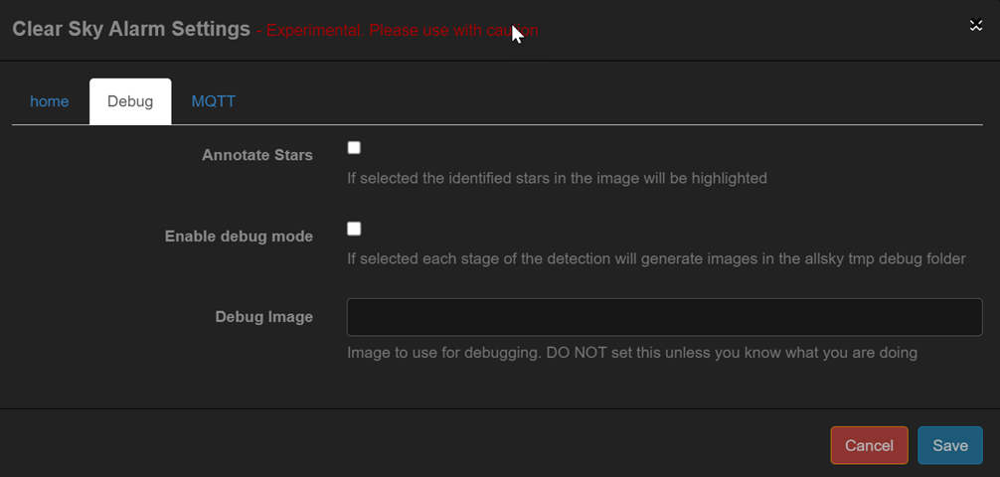 |
These options are for debugging and should not be used for normal operation
|
| 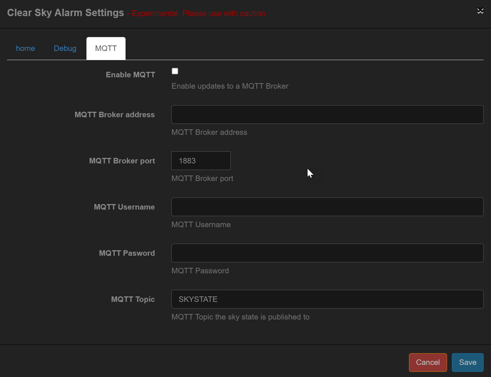 |
This is an advanced option and requires a MQTT broker. The setup and operation of a broker is beyond the scope of this document
|
Star Count
| Flows Available In | Description |
|---|---|
|
This counts stars in the captures AllSky Image. Stars are counted by using a template that looks like a star and attempts to locate anything in the image that looks like it. This works well when the image is well exposed and masked to remove any areas You will need to experiment with the detection values to get the best results, annotating the stars in the image can be very helpful. The Moon can also cause issues and a future versions of this module will automatically mask the Moon, or any other bright areas and also allow you to disable the module when the Moon meets certain critera such as over a certain % brightness and elevation This module is experimental and as such may produce erroneous results |
| 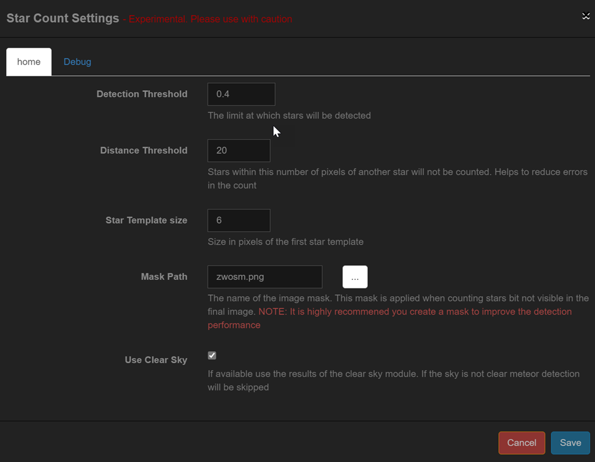 |
|
| 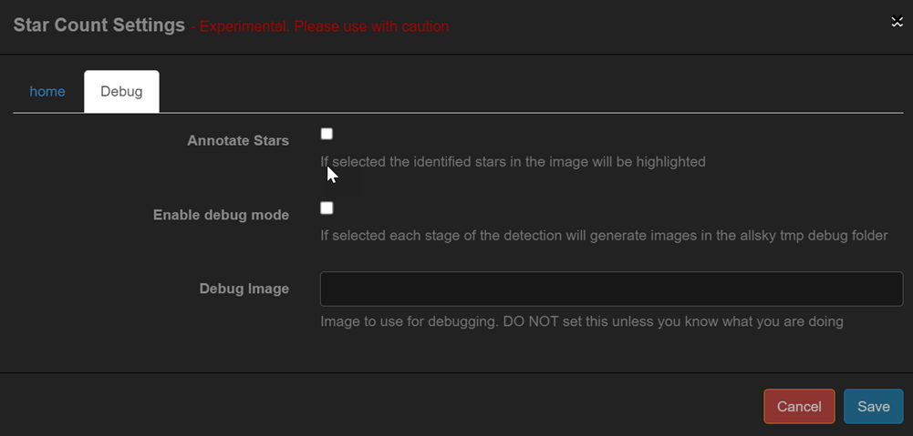 |
These options are for debugging and should not be used for normal operation
|
Meteor Detection
| Flows Available In | Description |
|---|---|
|
This attempts to detect any meteors in the image. The detection method looks for hard edged in the images and thus is susceptible to false positives if the image is not masked. You will need to experiment with the detection values to get the best results, annotating the meteors in the image can be very helpful. The Moon can also cause issues and a future versions of this module will automatically mask the Moon, or any other bright areas and also allow you to disable the module when the Moon meets certain criteria such as over a certain % brightness and elevation This module is experimental and as such may produce erroneous results |
| 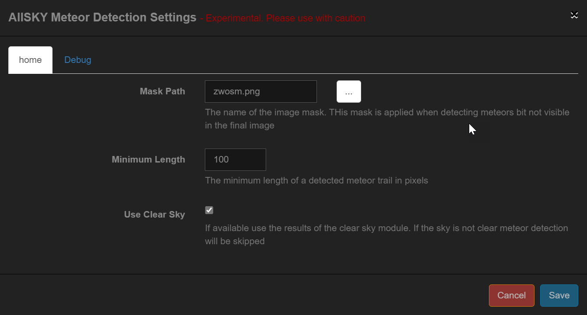 |
|
| 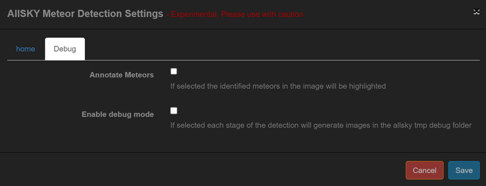 |
These options are for debugging and should not be used for normal operation
|
Export
| Flows Available In | Description |
|---|---|
|
Exports all internal AllSky variables to a json file. By default all environment variables prefixed with AS_ are exported but via the module options other AllSky variables can also be made available. This can be used by external programs |
| 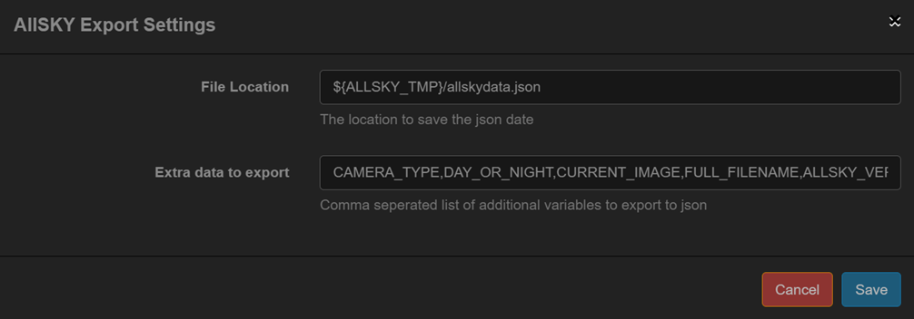 |
|
Overlay
| Flows Available In | Description |
|---|---|
|
Overlays data on the captured image. This module applies the fields defined in the 'Overlay Editor'. A full description of the editor is available in this documentation so is not covered here. Typically the overlay module will run towardsm if not at the end of the flow. This will allow it access to other variables created by modules |
Script
| Flows Available In | Description |
|---|---|
|
This allows a script to be run. This should only be used by users that understand how script are developer/run on Linux. Extreme care must be taken when using this module is it could cause the main AllSky software to stop operating |
| 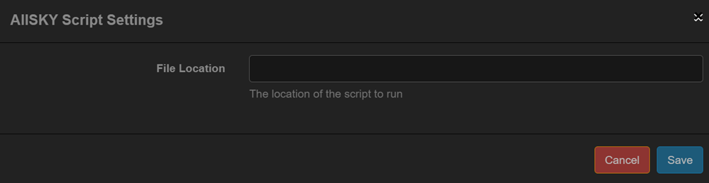 |
|
Save Image Data
| Flows Available In | Description |
|---|---|
|
This module writes image related data to a database allowing it to be graphed in the Web UI |
User Modules
The User Modules are installed from a separate GitHub repository and not included with the mainAllSky installation
Cloud Cover
| Flows Available In | Description |
|---|---|
|
This is an advanced module and requires external hardware for its operation This module use an MLX90614 to determine the cloud cover. The MLX90614 is a non contact Infra Red thermometer. It is used to measure the temperature of the sky and compare it to the ambient temperature. Generally the difference between the Sky temperature and ambient can be used to determine the amount of cloud. The exact theory for the calculations is beyond the scope of this documentation One of the big issues with using any for of sky temperature measurement is the sensor and water/snow ! If the sensor gets wet/covered then the readings will be useless. The best way to mounts the sensor is in a protective enclosure with the sensor mounted at 90 degrees to the sky and some form of reflective device used to reflect the sky at the sensor Two different methods are available for determining the cloud cover
|
| 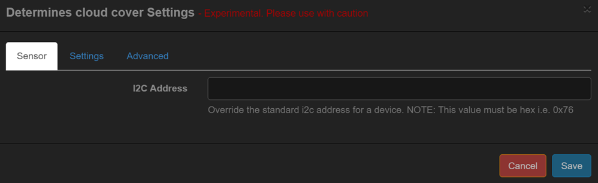 |
|
| 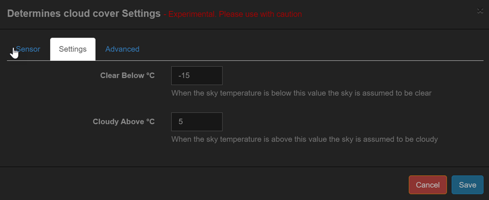 |
Between the two above temperatures the sky is assumed to be partially cloudy |
| 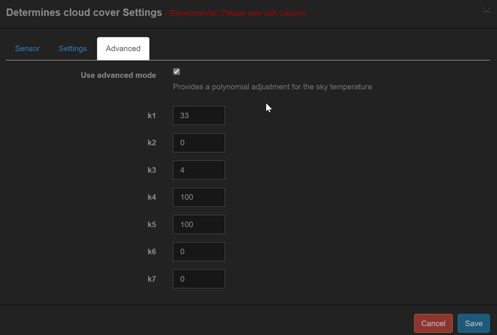 |
Details of the formulae used cen be found on the lunaticoastro website here Setting these values requires a lot of experimentation |
| 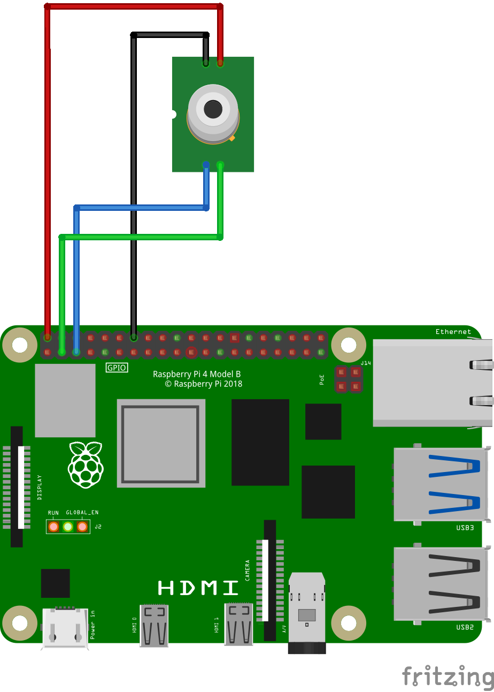 |
A typical connection diagram for a Cloud Cover sensor. As mentioned above the process of detecting clouds is not a simple one. The basic principle is to measure the difference between the ambient temperature and the temperature of the sky. The ambient is fairly easy to measure but the sky temperature presenets a few problems
The moisture problem is a little more difficult to solve and the best solution found is to mount the sensor horizontally and use a reflective surface to reflect the sky onto the sensor. This will allos the sensor to stay dry. Several environment variables are created that can be used in the overlay manager
|
Dew Heater
| Flows Available In | Description |
|---|---|
|
This is an advanced module and requires external hardware for its operation This module allows you to control a digital GPIO pin that can in turn be used to drive a dew heater. The GPIO pin cannot directly drive the heater instead it must be used to drive some form of switch, relay / transistor etc to control the heater. The electronics to do this are beyond the scope of this documentation Some form of sensor is required to obtain the current temperature and humidity. The module supports the most common form of sensors available on the market today |
| 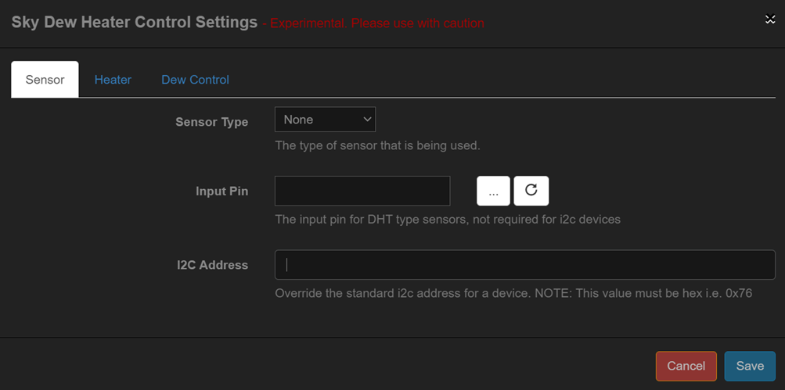 |
|
| 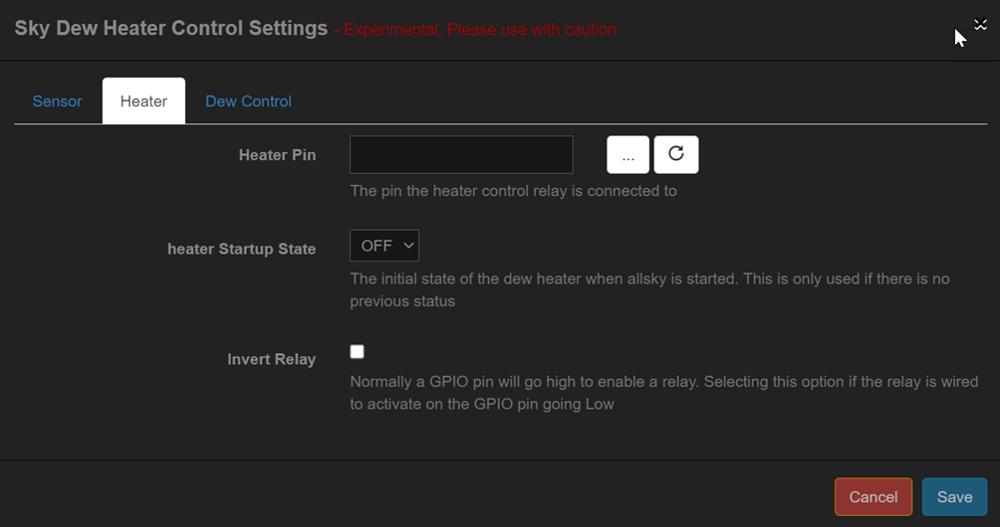 |
|
| 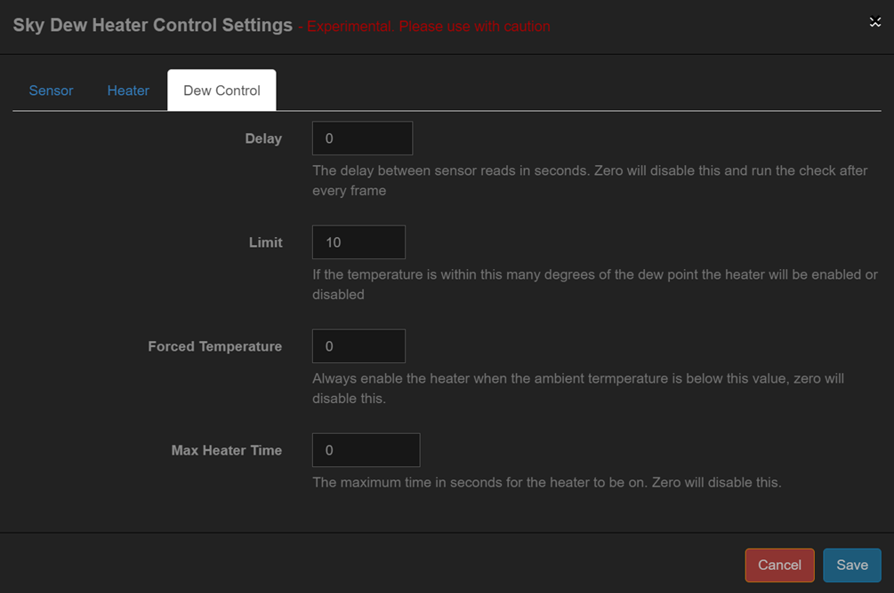 |
|
| 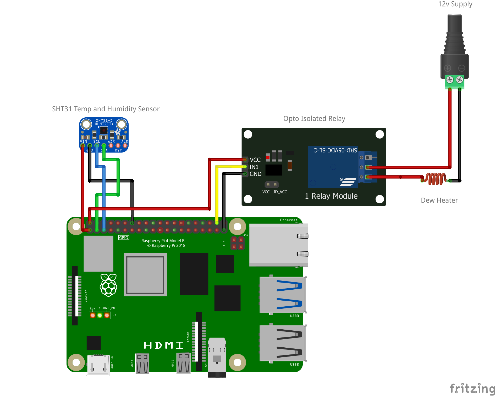 |
A typical connection diagram for a dew heater. In this example a SHT31 is being used to provide the temperature and humidity data. The module will then determine if the heater is required and by enabling the relevant GPIO pin, 20 in this case WARNING driving relays directly from the pi's GPIO pins can be problematic and cause damage to your Pi. If you are using a module then please ensure its has a snubber and is optically isolated. Please check this FAQ for more details. Several environment variables are created that can be used in the overlay manager
|
GPIO
| Flows Available In | Description |
|---|---|
|
This is an advanced module and requires external hardware for its operation This module allows a GPIO pin's state to be set on the transitions between day/night and night/day. This could for example be used to trigger some external electronics to cover and uncover the camera to protect it from direct sunlight in very warm climates |
 |
|
Discord
| Flows Available In | Description |
|---|---|
|
This is an advanced module and requires configuration in Discord Python Version This module requires python 3.9.0 or greater. The module installer will not allow the module to be installed if you do not have the correct version of python installed This module allows images to be sent to Discord channels. Currently the following images can be sent to Discord
Rate Limits Discord implement a rate limit on the API. It is very unlikely that by using this module you will hit any of the limits Post Sizes Discord implements a limit of 8Mb for any posted item. Its possible that the timelapse videos may exceed this rate so if you wish to send them to Discord you will have to configure AllskY to ensure that the video is less than 8Mb. The module will check before sending the file and if it exceeds the Discord limit it will not be sent and an error logged in the allsky log file You will need to create Webhooks in your Discord server. These can be created from the server settings. 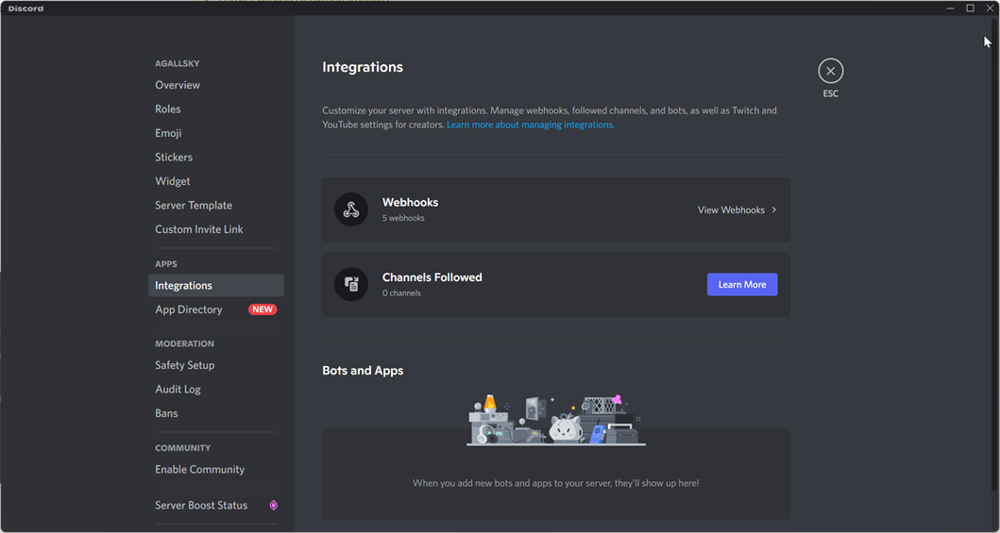 |
| 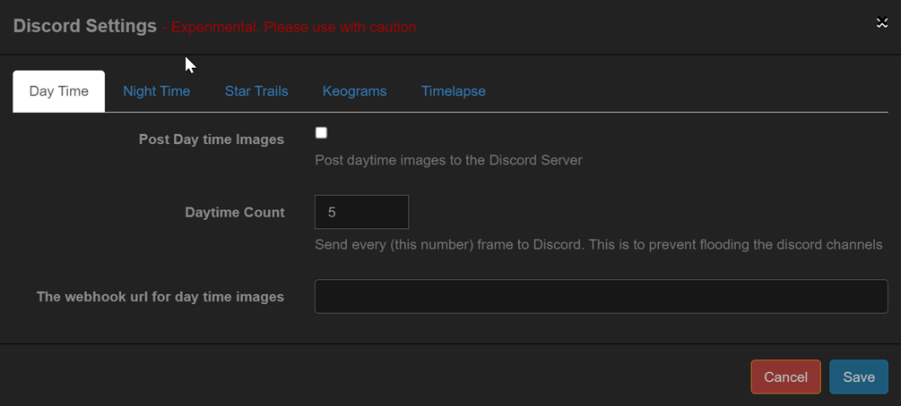 |
|
| 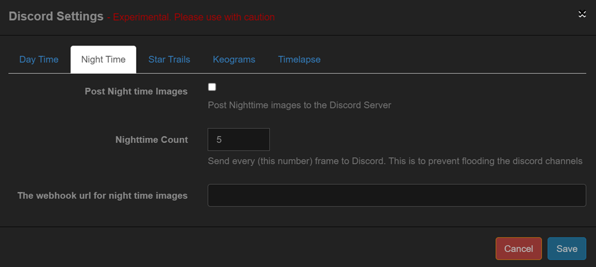 |
|
| 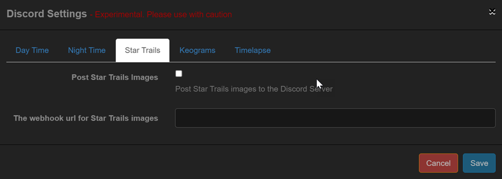 |
|
| 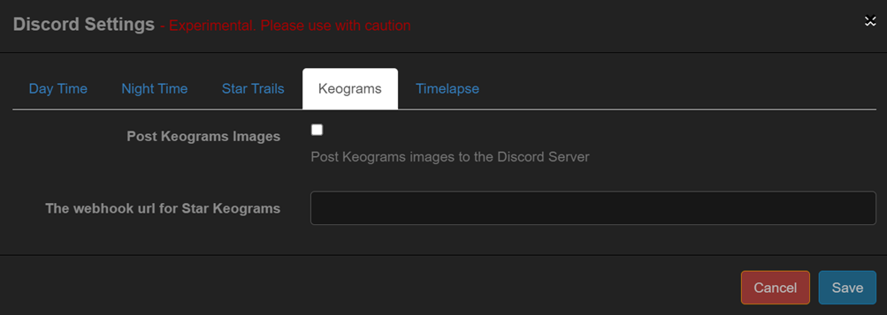 |
|
| 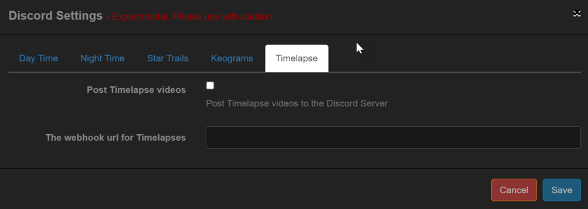 |
Post Sizes Discord implements a limit of 8Mb for any posted item. Its possible that the timelapse videos may exceed this rate so if you wish to send them to Discord you will have to configure AllskY to ensure that the video is less than 8Mb. The module will check before sending the file and if it exceeds the Discord limit it will not be sent and an error logged in the allsky log file |
Rain
| Flows Available In | Description |
|---|---|
|
This is an advanced module and requires external hardware This module uses an external sensor to detect rain. There are various cheap sensors available to detect rain that either provide an analog or digital output. This module only supports sensors with a digital output |
| 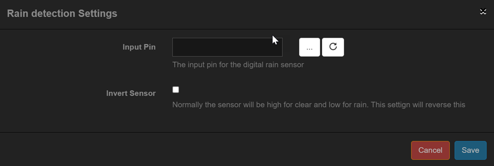 |
|
| 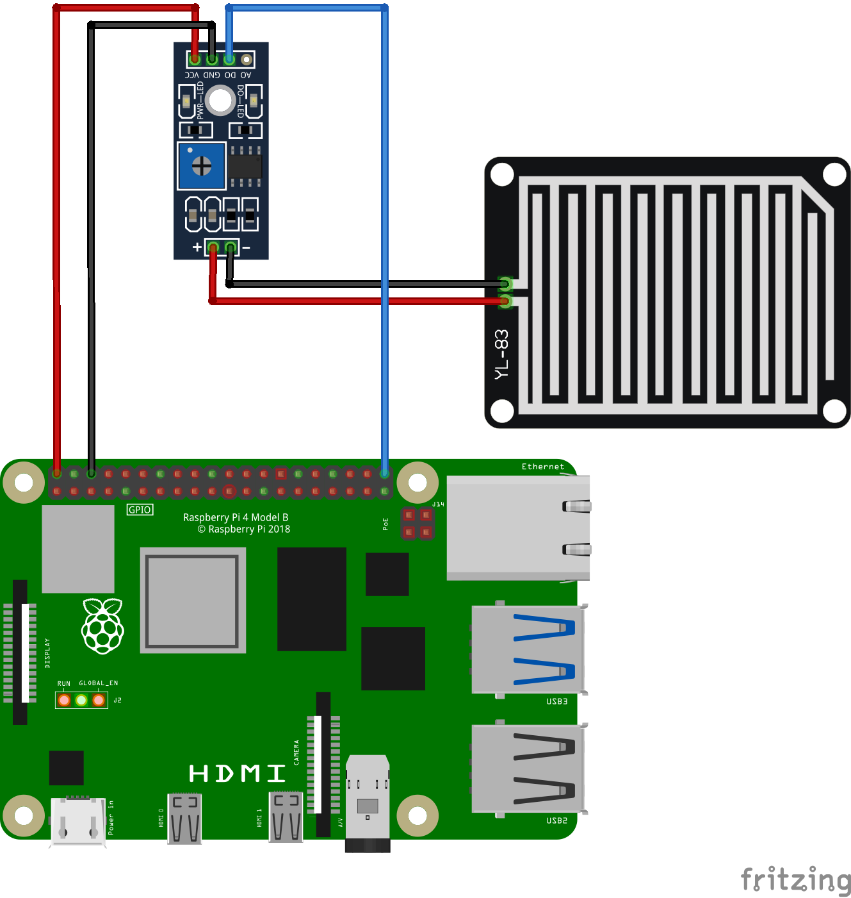 |
A typical connection diagram for rain detection using a cheap rain detection module. These modules provide both an analog and digital output but this module only works with the digital output. From testing these cheap sensors will work but the contact boards suffer badly from corrosion. A much better module is described here. Whilst more expensive and requiring a 12 volt supply this is a far superior rain/snow detector. Two environment variables are created that can be used in other modules or the overlay manager
|
Open Weather Map
| Flows Available In | Description |
|---|---|
|
This module reads weather data from the free Open Weather Map API. To use this module you will need to signup for a free API key on the openweathermap website. The location used for the weather is the coordinates you have specified in the main AllSky settings The free tier of the api is limited to 1,000 calls per day so you will need to configure the settings appropriately. Reading the data every 10 minutes is more than frequent enough and will ensure you do not exceed the api limit Several environment variables are created that can be used in the overlay manager
|
| 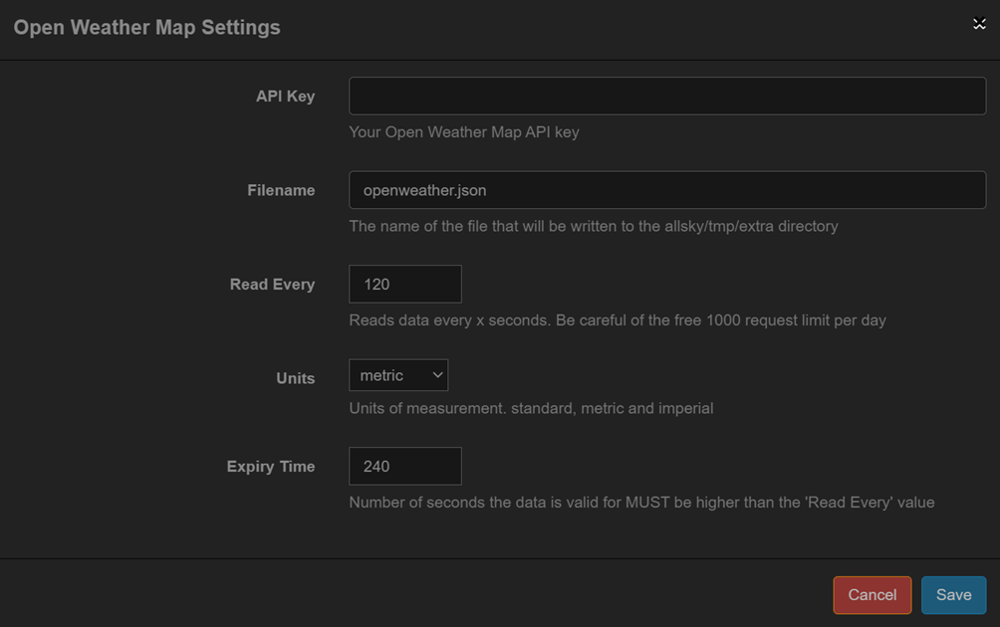 |
|
Creating and using Masks
Several of the modules make use of masks. Masks are used to 'hide' areas of the image to prevent them creating issues in the modules. For example the star detection module can use a mask to hide all areas of the image that may contain things that will confuse the star detection typically local light pollution
Masks can also be used to 'clean' up the non image circle parts of the image.
|
Consider the following image which is a raw image from the camera. The areas outside of the main image contain a lot of noise |
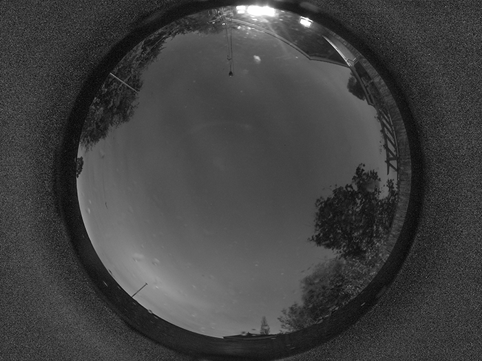 |
|
To clean this up we create a 'mask' The mask is a Black and White image. Any areas in white will be kept any areas in black will be masked. So creating a mask like this |
|
|
After the mask has been applied the resulting image looks a lot cleaner |
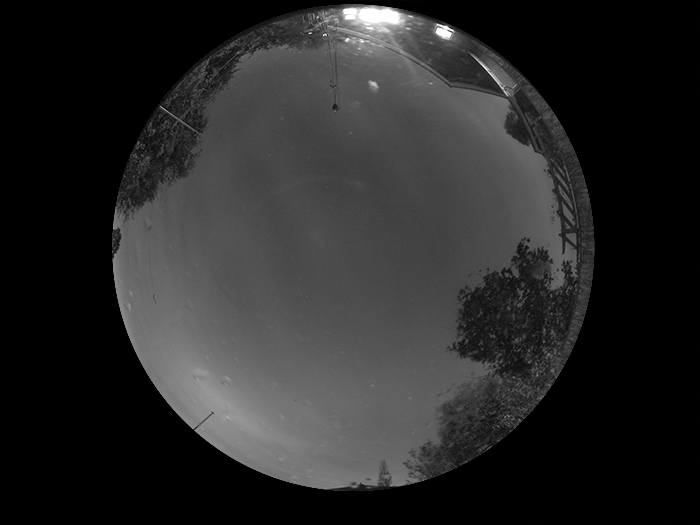 |
Some modules will apply the mask but it will not be used for the final image. Examples of this are masks used to mask the image for star/meteor detection
Masks do not have to be circular, they can be any shape you like. In fact the masks used for star and meteor detection are very likely to be a strange shape
GPIO
Several of the modules require the selection of a GPIO pin on the pi. The module editor has an inbuilt GPIO selector to help ease the process of selecting the required pin
|
When clicking on the GPIO selection the GPIO selector is displayed allowing you to select the required pin, in the example GPIO27 is currently selected Currently only the PI 3/4 GPIO pins are implemented |
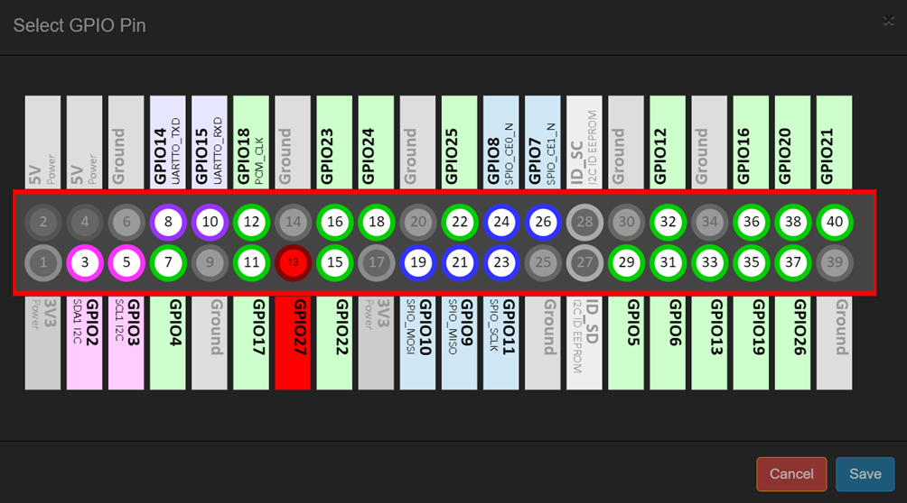 |
Module Performance / Debugging
Its important that modules do not take too much time to run as this will cause load issues on the PI.
After AllSky has taken an image the save image process is run in background, including running the relevant module flow. Its important that this process finishes before the next image is captured. If the module flow takes too long multiple save image process will be running, this will start to cause performance issues on the PI
The best way to ensure this does not happen is to make sure that the module watchdog is enabled in the Module Manager Settings
TIP - When installing a new module ensure debug mode is enabled in the Module Manager Settings and monitor how long the new module is taking and what effect its having on the overall flow time
The Module Manager Debug Window
| 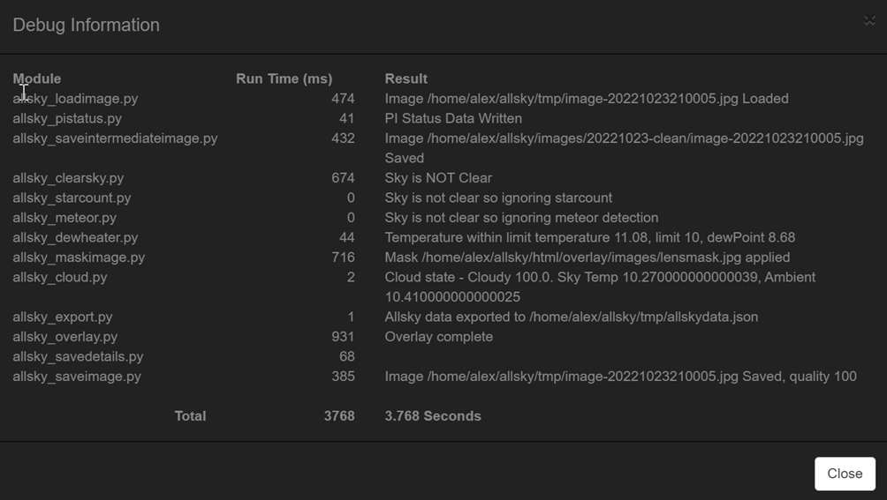 |
The debug dialog shows each of the enabled modules, how long it took to run, the result of the last run and the total execution time for all modules This information is useful if you find there are too many save image processes running for determining if any particular module is causing an issue |
The AllSky debug log
The main AllSky debug log will contain information from the module processor. The amount of information logged will depend upon the main AllSky debug level. When the debug level is 0 only critical module errors will be logged. Any other log level will display verbose information as shown below.
Periodic module output is logged to the allskyperiodic.log log file. This file will be in the same location as the main AllSky log file, typically /var/log
Oct 23 21:08:15 allskytest allsky.sh[24948]: INFO: Loading recipe...
Oct 23 21:08:15 allskytest allsky.sh[24948]: INFO: ----------------------- Running Module allsky_loadimage.py -----------------------
Oct 23 21:08:15 allskytest allsky.sh[24948]: INFO: Attempting to load allsky_loadimage
Oct 23 21:08:15 allskytest allsky.sh[24948]: INFO: Image /home/alex/allsky/tmp/image-20221023210636.jpg Loaded
Oct 23 21:08:15 allskytest allsky.sh[24948]: INFO: Module allsky_loadimage.py ran ok in 0.493601s
Oct 23 21:08:15 allskytest allsky.sh[24948]: INFO: ----------------------- Running Module allsky_pistatus.py -----------------------
Oct 23 21:08:15 allskytest allsky.sh[24948]: INFO: Attempting to load allsky_pistatus
Oct 23 21:08:15 allskytest allsky.sh[24948]: INFO: Module allsky_pistatus.py ran ok in 0.041586s
Oct 23 21:08:15 allskytest allsky.sh[24948]: INFO: ----------------------- Running Module allsky_saveintermediateimage.py -----------------------
Oct 23 21:08:15 allskytest allsky.sh[24948]: INFO: Attempting to load allsky_saveintermediateimage
Oct 23 21:08:15 allskytest allsky.sh[24948]: /home/alex/allsky/images/20221023-clean
Oct 23 21:08:15 allskytest allsky.sh[24948]: INFO: Image /home/alex/allsky/images/20221023-clean/image-20221023210636.jpg Saved
Oct 23 21:08:15 allskytest allsky.sh[24948]: INFO: Module allsky_saveintermediateimage.py ran ok in 0.442361s
Oct 23 21:08:15 allskytest allsky.sh[24948]: INFO: ----------------------- Running Module allsky_clearsky.py -----------------------
Oct 23 21:08:15 allskytest allsky.sh[24948]: INFO: Attempting to load allsky_clearsky
Oct 23 21:08:15 allskytest allsky.sh[24948]: INFO: Created star template. Radius - 6
Oct 23 21:08:15 allskytest allsky.sh[24948]: INFO: Sky is NOT clear. 5 Stars found, clear limit is 40
Oct 23 21:08:15 allskytest allsky.sh[24948]: INFO: MQTT disabled
Oct 23 21:08:15 allskytest allsky.sh[24948]: INFO: Module allsky_clearsky.py ran ok in 0.677157s
Oct 23 21:08:15 allskytest allsky.sh[24948]: INFO: ----------------------- Running Module allsky_starcount.py -----------------------
Oct 23 21:08:15 allskytest allsky.sh[24948]: INFO: Attempting to load allsky_starcount
Oct 23 21:08:15 allskytest allsky.sh[24948]: INFO: Sky is not clear so ignoring starcount
Oct 23 21:08:15 allskytest allsky.sh[24948]: INFO: Module allsky_starcount.py ran ok in 9.8e-05s
Oct 23 21:08:15 allskytest allsky.sh[24948]: INFO: ----------------------- Running Module allsky_meteor.py -----------------------
Oct 23 21:08:15 allskytest allsky.sh[24948]: INFO: Attempting to load allsky_meteor
Oct 23 21:08:15 allskytest allsky.sh[24948]: INFO: Sky is not clear so ignoring meteor detection
Oct 23 21:08:15 allskytest allsky.sh[24948]: INFO: Module allsky_meteor.py ran ok in 6.8e-05sv
Oct 23 21:08:15 allskytest allsky.sh[24948]: INFO: ----------------------- Running Module allsky_dewheater.py -----------------------
Oct 23 21:08:15 allskytest allsky.sh[24948]: INFO: Attempting to load allsky_dewheater
Oct 23 21:08:15 allskytest allsky.sh[24948]: INFO: Turning Heater on
Oct 23 21:08:15 allskytest allsky.sh[24948]: INFO: Temperature within limit temperature 11.13, limit 10, dewPoint 8.74
Oct 23 21:08:15 allskytest allsky.sh[24948]: INFO: Sensor SHT31 read. Temperature 11.13 Humidity 85.19 Dew Point 8.74 Heat Index -14.47
Oct 23 21:08:15 allskytest allsky.sh[24948]: INFO: Module allsky_dewheater.py ran ok in 0.040973s
Oct 23 21:08:15 allskytest allsky.sh[24948]: INFO: ----------------------- Running Module allsky_maskimage.py -----------------------
Oct 23 21:08:15 allskytest allsky.sh[24948]: INFO: Attempting to load allsky_maskimage
Oct 23 21:08:15 allskytest allsky.sh[24948]: INFO: Module allsky_maskimage.py ran ok in 0.516113s
Oct 23 21:08:15 allskytest allsky.sh[24948]: INFO: ----------------------- Running Module allsky_cloud.py -----------------------
Oct 23 21:08:15 allskytest allsky.sh[24948]: INFO: Attempting to load allsky_cloud
Oct 23 21:08:15 allskytest allsky.sh[24948]: INFO: Cloud state - Cloudy 100.0. Sky Temp 10.370000000000005, Ambient 10.450000000000045
Oct 23 21:08:15 allskytest allsky.sh[24948]: INFO: Module allsky_cloud.py ran ok in 0.002392s
Oct 23 21:08:15 allskytest allsky.sh[24948]: INFO: ----------------------- Running Module allsky_export.py -----------------------
Oct 23 21:08:15 allskytest allsky.sh[24948]: INFO: Attempting to load allsky_export
Oct 23 21:08:15 allskytest allsky.sh[24948]: INFO: Allsky data exported to /home/alex/allsky/tmp/allskydata.json
Oct 23 21:08:15 allskytest allsky.sh[24948]: INFO: Module allsky_export.py ran ok in 0.001127s
Oct 23 21:08:15 allskytest allsky.sh[24948]: INFO: ----------------------- Running Module allsky_overlay.py -----------------------
Oct 23 21:08:15 allskytest allsky.sh[24948]: INFO: Attempting to load allsky_overlay
Oct 23 21:08:15 allskytest allsky.sh[24948]: INFO: Config file set to /home/alex/allsky/config/overlay.json
Oct 23 21:08:15 allskytest allsky.sh[24948]: INFO: Loading Config took 0.00063 Seconds. Elapsed Time 0.000662 Seconds.
Oct 23 21:08:16 allskytest allsky.sh[24948]: INFO: Adding Text Fields took 0.255803 Seconds. Elapsed Time 0.685933 Seconds.
Oct 23 21:08:16 allskytest allsky.sh[24948]: INFO: Adding Image Fields took 0.248668 Seconds. Elapsed Time 0.934638 Seconds.
Oct 23 21:08:16 allskytest allsky.sh[24948]: INFO: Saving Final Image took 0.006398 Seconds. Elapsed Time 0.941075 Seconds.
Oct 23 21:08:16 allskytest allsky.sh[24948]: INFO: Writing debug data took 4.5e-05 Seconds. Elapsed Time 0.941138 Seconds.
Oct 23 21:08:16 allskytest allsky.sh[24948]: INFO: Debug information written to /home/alex/allsky/tmp/overlaydebug.txt
Oct 23 21:08:16 allskytest allsky.sh[24948]: INFO: Annotation Complete Elapsed Time 0.942793 Seconds.
Oct 23 21:08:16 allskytest allsky.sh[24948]: INFO: Module allsky_overlay.py ran ok in 0.951637s
Oct 23 21:08:16 allskytest allsky.sh[24948]: INFO: ----------------------- Running Module allsky_savedetails.py -----------------------
Oct 23 21:08:16 allskytest allsky.sh[24948]: INFO: Attempting to load allsky_savedetails
Oct 23 21:08:16 allskytest allsky.sh[24948]: INFO: Module allsky_savedetails.py ran ok in 0.128938s
Oct 23 21:08:16 allskytest allsky.sh[24948]: INFO: ----------------------- Running Module allsky_saveimage.py -----------------------
Oct 23 21:08:16 allskytest allsky.sh[24948]: INFO: Attempting to load allsky_saveimage
Oct 23 21:08:16 allskytest allsky.sh[24948]: INFO: Image /home/alex/allsky/tmp/image-20221023210636.jpg Saved, quality 100
Oct 23 21:08:16 allskytest allsky.sh[24948]: INFO: Module allsky_saveimage.py ran ok in 0.388242s
Developing Custom Modules
The module system is designed to be extended by developing custom modules
Python Versions
Modules are developed in Python and should use the latest version available for the Pi. Its should be noted that whilst multiple versions of Python can be installed on a Pi its best just to use the version that ships with the OS. Generally that may mean reinstalling your AllSky installation to get the latest version of python. Running multiple versions of python is beyond the scope of this documentation
Anatomy Of A Module
A module consists of two key parts
- The metadata variable - This variable defines everything the module manager needs to run the module. This includes basic information about the module and the configuration options it requires
- The module entry point - The main function that is called by the Module Manager
Every module MUST import the allsky_shared module. This module is used to pass data from the flow processor to each module
The Meta Data Variable
Please refer to the BoilerPlate example module for more details of the variable. The Boiler Plate example includes all of the available options
| Field | Type | Mandatory | Description |
|---|---|---|---|
| name | String | Yes | The name of the module. This field is displayed as the heading for a module when its displayed in the module manager |
| description | String | Yes | The description of the module. This field is displayed in the module manager |
| module | String | Yes | The module name. MUST be in the format allsky_{module name} i.e. allsky_boilerplate |
| version | String | No | The version of the module. If this field is not present then the version of the main AllSky software will be used |
| enabled | String | No | 'true' or 'false'. If set to true the module is enabled, handy for setting its initial state. NOTE: If the option to auto enable modules is enabled in the module manager then this will take priority over this value |
| events | Dictionary | Yes | A list of the flows the module should be displayed in. Valid flows are
|
| experimental | String | No | 'true' or 'false'. If set to true a warning is displayed in the module manager indicating the module is experimental |
| arguments | Dictionary | No | A list of the values that will be passed to the main processing methof of the module in the params array. This exists to allow you to specify defaults for the fields. Definitions for the fields are defined in the argumentdetails field below |
| argumentdetails | Dictionary | No | Dictionary of definitions for each of the arguments |
The argumentdetails Dictionary
A module may require that the user can set values for its paramaters. This is implemented via the argumens and argumentdetails sections. If there are any argumentdetails present then a settings option will be displayed in the module manager. Clicking on the settings option will display a dialog allowing the modules settings to be changed. The dialog is created automatically from the options defined in the argumentdetails section
| Field | Type | Mandatory | Description |
|---|---|---|---|
| required | String | Yes | 'true' or 'false'. If set to true the field is required. NOTE: This is not currently implemented but will be in a future release |
| description | String | Yes | This is the label for the field in the module settings dialog |
| help | String | No | This is the help text for the field in the module settings dialog |
| tab | String | No | The tab to display the field in. If left blank the field will be displayed on the 'Home' tab. This is handy for grouping fields into seperate tabs |
| type | Dictionary | No | A Dictionary defining the type of field. The key is the name of the field, the same name as used in the arguments section. If no type is defined the field is assumed to be a text field |
Available field types
| fieldtype | Description | Additional paramaters |
|---|---|---|
| If blank the field will be assumed to be a text entry field | ||
| select | A drop down list from which the user can select an option |
|
| checkbox | A checkbox allowing the entry of a true or false value | None |
| spinner | A numerical entry field with up down controls to alter the value |
|
| gpio | Displays a dialog allowing the user to select a GPIO pin on the Pi. This field type is useful when developing a module that requries a user to select a GPIO pin | None |
| image | Displays a dialog allowing the user to select/upload an image. This is useful where a module may require the user to select a mask | None |
| roi | Displays a dialog allowing the user to select a Region Of Interest (ROI) from the captured image | None |
Complete metadata example
| 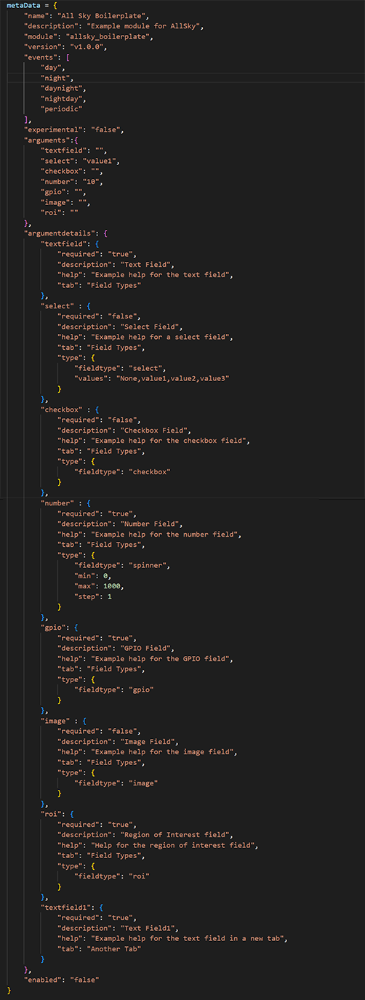 |
This is a full example of all of the possible options available in the metaData dictionary This example can be found in the boilerplate module in the additional modules repository on GitHub |
The AllSky Shared module
To improve the performance of modules a common shared module is used. This shared module allsky_shared contains both helper functions and data from the main capture process. The module exists so that each individual module does not have to perform length taks like loading an image
AllSky Shared module data
| Variable | Description |
|---|---|
| args | The arguments passed to the module processor (not normally needed) |
| LOGLEVEL | The allsky debug level (not normally ndded) |
| CURRENTIMAGEPATH | The full path to the current image (not normally needed, not available in daynight, nightday or periodic) |
| TOD | The time of day not available in daynight, nightday or periodic) |
| fullFilename | The final image filename i.e. image.jpg not available in daynight, nightday or periodic) |
| image | a numpy array of the current image - Use this for any processing of the captured image. DO NOT attempt to load the image from disk within a module as this will have a severe performance impact on the module. Not available in daynight, nightday or periodic) |
AllSky Shared module helpers
| Function | Description |
|---|---|
| log(level, message) | Logs an entry to the allsky log file if the debug level is above 'level'. Errors are always logged. When a module needs to write to a log it should use this function rather than write to any log files directly. THis function will ensure that the log message appears in the main AllSky log file |
| getEnvironmentVariable(name, fatal=False, error='') | Gets an environment variable, can terminate if needed by setting the fatal variable and an error code |
| var_dump(variable) | Pretty dump of a variable. This is handy for debugging modules. The output will appear in the main AllSky log file. |
| getSetting(settingName) | Gets a setting from the camera settings file |
| writeDebugImage(module, fileName, image) | Writes a debug image to the $ALLSKY/tmp/debug/{module} folder. This can be useful when debugging a module to check the output at various stages |
| startModuleDebug(module) | Creates the debug directories for a module |
| convertPath(path) | Replaces allsky variables in a string, this is useful if a module enters a directory based upon any of the AllSky variables. So for example '${ALLSKY_TMP}/allskydata.json' will have the allsky tmp avriable replaced with its real path. This function can be used to replace any of the allsky variables in a string |
| checkAndCreatePath(filePath) | Checks if the passed file exists and if not creates it |
| checkAndCreateDirectory(filePath) | Checks if the passed directory exists and if not creates it |
| raining() | Only available if the rain module is being used - Returns a boolean flags to indicate the rain state |
| convertLatLon(input) | Converts 52.2N to 52.2 i.e converts to decimal |
| setLastRun(module) | Sets the last run time for a module. Useful for where a module only needs to run periodically |
| shouldRun(module, period) | Determines if a module should run based on the period |
| dbAdd(key, value) | Adds the key/value pair to the internal database |
| dbUpdate(key, value) | Updates the key/value pair to the internal database |
| isFileWriteable(fileName) | Determines of the file is writeable |
| isFileReadable(fileName) | Determines of the file is readable |